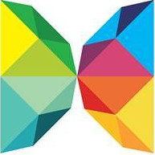

About International Club
 Founded in 2007, International Club (IC) aims to introduce the various cultures in the world to RMIT students and help them gain experience about international industries. Understanding that joining clubs is a vital part of university life, IC offers members a friendly working environment where they can easily become friends and have a memorable time working together. As a team, we work together and also learn from each other. All members have the same rights and responsibilities to speak up, share their ideas with others and choose what part they like to work on. On the other hand, we also organise fun and refreshing activities to bind and strengthen our relationships. It is the place for all members to gather, to play and to work together and grow into themselves.
For event, contact:
|
Trinh Thi Thanh Thao 0903802522 S3393371@rmit.edu.vn |
Tran Ngoc Tue Man 0909915859 s3445883@rmit.edu.vn |
For sponsors, contact:
|
Trinh Thi Thanh Thao 0903802522 icrmitvn@gmail.com |